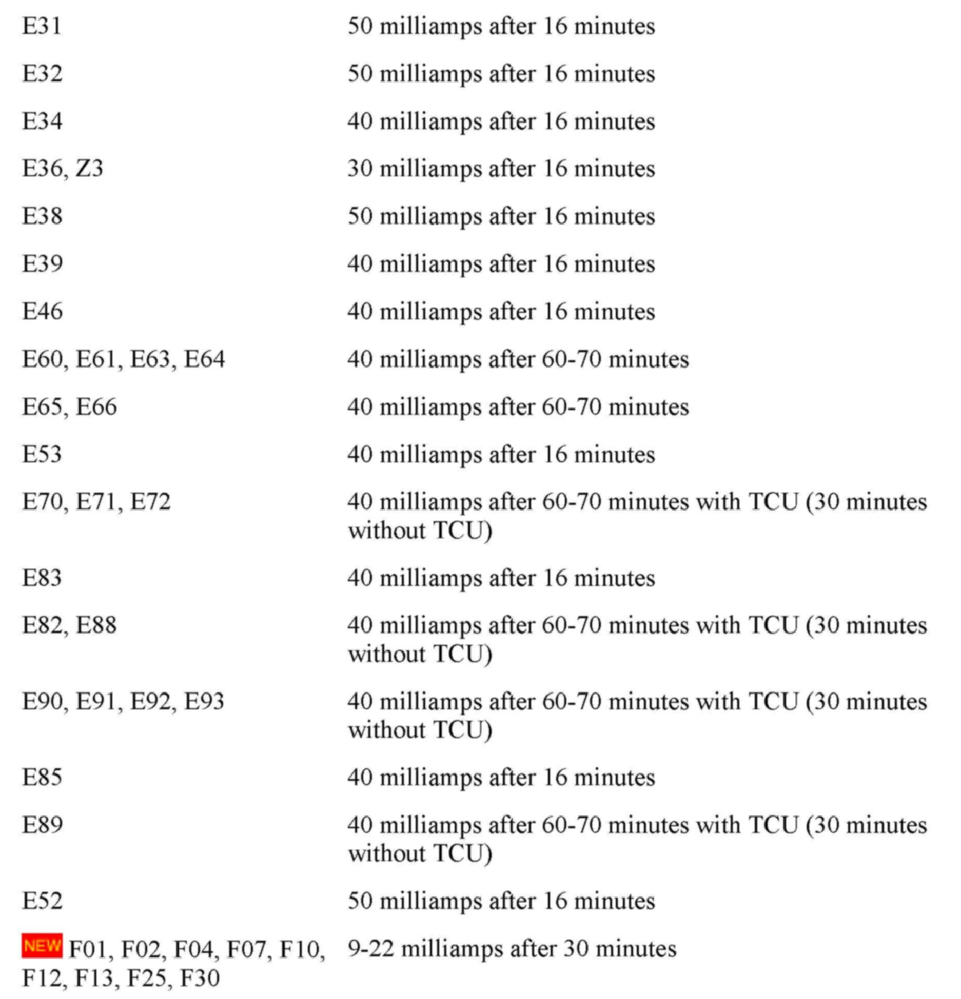

Procedure
PROCEDURE1. [NEW] It is very important that any "Power management" faults stored be diagnosed and corrected, and the "Energy Diagnosis" test plan carried out before the following procedure is performed. Only perform this procedure if closed-circuit current violations are listed in the "Most Likely Cause" list.
2. [NEW] Check and test the battery using the BMW Battery Tester. Refer to SI B 04 25 02 for information about the BMW Battery. Refer to SI B61 02 11 for vehicles equipped with advanced onboard battery diagnostics that do not require the BMW Battery Tester. If necessary, recharge or replace the battery.
3. If the battery is installed in the trunk, open the trunk and turn the lock to the locked position, using a screwdriver or similar (simulates the trunk lid being closed). The hood must be closed. If the battery is installed in the engine compartment, open the hood and pull the front lid contact switch fully up, and lock in this position (workshop position, simulates the front lid being closed). The trunk must be closed.
4. With the exception of the trunk/hood above, all other doors/lids must be closed.
5. In order to simulate normal closed-circuit conditions:
^ Turn the ignition on and activate all electrical consumers, including any accessories. Turn the ignition off. In some cases, a drive cycle may need to be carried out in order to duplicate a closed-circuit current problem.
^ Open and close the driver's door (simulates somebody getting out).
^ Lock the car, arming the DWA if this is installed.

6. In general, closed-circuit current consistently over 50mA must be investigated. Depending on the vehicle's equipment, closed-circuit current by vehicle model is approximately as shown above.
7. If the nominal milliamp reading is not achieved after the appropriate time, refer to the attached troubleshooting charts. On 2005 MY vehicles equipped with BMW ASSIST, there are additional current fluctuations as high as 500ma that last for approximately 2 minutes. The fluctuations occur every 15 minutes for up to 14 hours after key off. This is considered normal operation of the TCU, and should not be considered a fault. This also applies to 2005 TCUs that are installed into earlier production vehicles as replacement parts.
^ E60, E63, E64 Closed-Circuit Current Troubleshooting E6x up to 9/05 production
^ E60, E61, E63, E64 Closed-Circuit Troubleshooting E6x from 9/05 production
^ E65, E66 Closed-Circuit Current Troubleshooting up to 3/04 production
^ E65, E66 Closed-Circuit Current Troubleshooting from 3/04 production
^ Normal closed-circuit current values for E65, E70, E60, E61, E63, and E64
CLOSED-CIRCUIT CURRENT MEASUREMENT WITH THE IMIB
Note:
This technique with an IMIB is particularly suitable for extended measurements, and provides a graphical readout of recorded measurements over time. It is recommended for situations where the use of a multimeter provided insufficient information for problem diagnosis.
1. The IMIB can be accessed from any ISID within the workshop.
2. Select "Activities".
3. Select "Measuring devices".
4. Select from the "Level 1" column, "Measuring devices", and then "OK".
5. From the "Connection manager" screen, select the free IMIB and "Set up connection".
6. The "Measures devices" screen opens on the "Multimeter" tab.
7. Select the "Oscilloscope" tab.
8. Highlight the "CH1" tab to activate channel 1.
9. Under channel 1, "Source", scroll with the arrows to select "Clip-on probe 50A".
10. Make sure that clip-on probe is not connected to the battery cable, and acknowledge the pop-up message with "OK".
11. Change the "A/Div" setting to "1A".
12. Under the "Time" selection box, change the "Time/Div" setting based on the number of measurements needed (5 ms to 200 s). The longer times should be selected when performing the measurement over an extended period.
13. Select "CH 1" under "Cursor" to monitor the actual readings.
14. Select "Record" if performing long term measurements.
15. After performing the measurement, select "Record" again; the display will change to "Compress" and display the recorded data on the 1 screen.